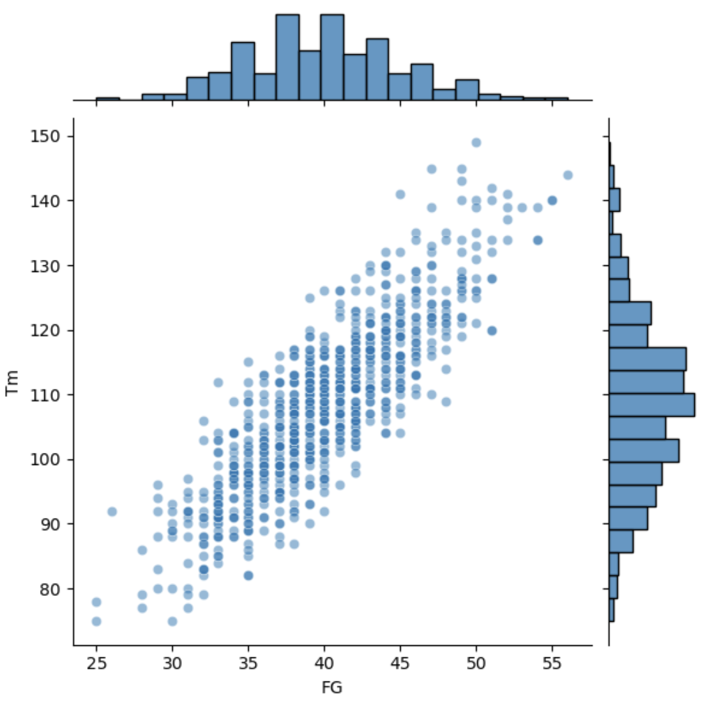
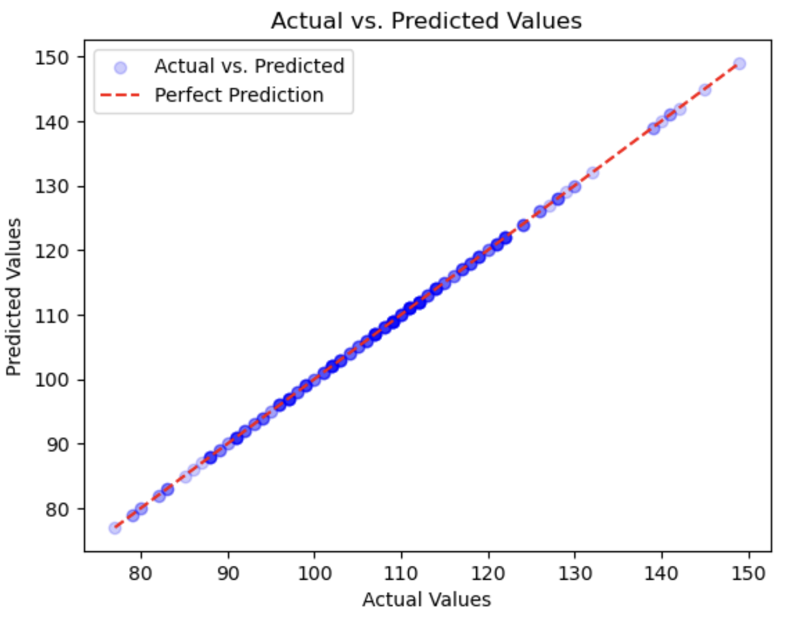

Boston Celtics Team Points Prediction
Presented by: Bladimir Nunez
Last Updated: May 13, 2024
Project Overview
In this project I webscrape 10 seasons worth of game data for the Boston Celtics. I use the data to be able to create a linear regression model using the historical game data to be able to predict points in a game for the team using predictive variables such as (field goals, field goal %, 3 pointers, 3 point percentage, free throw, free throw %, assists, opponent points) and my target variable of points(Tm).
Visit GitHub Code!Exploratory Data Analysis (EDA)


Linear Regression Model
Mean Absolute Error: 1.344
Mean Squared Error: 3.492
R-Squared Score (R2): 1
Data Sources
I used 10 seasons worth of Boston Celtics game data from the basketball reference website.
Link to SiteTechnologies Used
Python(Pandas, Matplotlib, Scikit-Learn, Seaborn)
Data Cleaning/Preprocessing
- Rename Columns
- Drop Unneeded Columns
- Convert numeric columns to int/float data types
- Fill In NULL rows with values
Challenges
This was my first project creating a model. My challenges here were learning more about linear regression models and what factors are used to be able to monitor if the model is accurate or not such as mean absolute error and mean square error. Another challenge was taking some time to understand the syntax of using the SkLearn library to create and fit my model to then predict my target value.